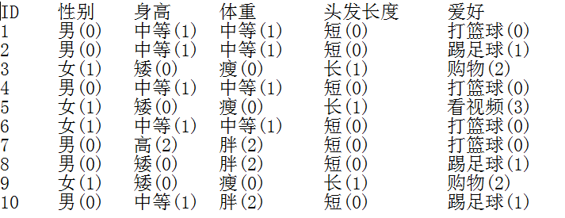
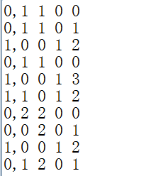

这篇文档主要是对NaiveBayes算法在mllib实现的一个梳理。具体的算法介绍和使用请看柯旭的文档，这里使用的例子也用柯旭文档中举的。
例：通过每个人的特征情况来判断人的性别，测试数据为:

将测试数据装换为数字模型，人物的性别用0,1表示，如下图：

NaiveBayes是有监督的机器学习算法，算法分为训练和预测两个阶段。
接收类型为LabeledPoint的RDD作为参数，返回训练的结果--NaiveBayesModel对象。
def run(data: RDD[LabeledPoint]): NaiveBayesModel = {
val requireNonnegativeValues: Vector => Unit = (v: Vector) => {
val values = v match {
case sv: SparseVector => sv.values
case dv: DenseVector => dv.values
}
if (!values.forall(_ >= 0.0)) {
throw new SparkException(s"Naive Bayes requires nonnegative feature values but found $v.")
}
}
val requireZeroOneBernoulliValues: Vector => Unit = (v: Vector) => {
val values = v match {
case sv: SparseVector => sv.values
case dv: DenseVector => dv.values
}
if (!values.forall(v => v == 0.0 || v == 1.0)) {
throw new SparkException(
s"Bernoulli naive Bayes requires 0 or 1 feature values but found $v.")
}
}
定义了两个类型为Vector--> => Unit的函数，在下面的combineByKey函数中做参数使用，分别检验modelType为Bernoulli（两点分布）和 Multinomial（多项分布）的情况，前者要求所有特征值只能为0或1，否则抛错；后者要求所有特征值非负，否则抛错。modelType在可以调用 NaiveBayes的方法train(input: RDD[LabeledPoint], lambda: Double, modelType: String)传入。
// Aggregates term frequencies per label.
// TODO: Calling combineByKey and collect creates two stages, we can implement something
// TODO: similar to reduceByKeyLocally to save one stage.
val aggregated = data.map(p => (p.label, p.features)).combineByKey[(Long, DenseVector)](
createCombiner = (v: Vector) => {
if (modelType == Bernoulli) {
requireZeroOneBernoulliValues(v)
} else {
requireNonnegativeValues(v)
}
(1L, v.copy.toDense)
},
mergeValue = (c: (Long, DenseVector), v: Vector) => {
requireNonnegativeValues(v)
BLAS.axpy(1.0, v, c._2)
(c._1 + 1L, c._2)
},
mergeCombiners = (c1: (Long, DenseVector), c2: (Long, DenseVector)) => {
BLAS.axpy(1.0, c2._2, c1._2)
(c1._1 + c2._1, c1._2)
}
).collect()
通过combineByKey函数来计算，createCombiner函数将value的类型由vector变成了(Long,DenseVector)，元组的第一个元素为1L,mergeValue函数通过调用BLAS线性代数库来做向量计算，这里axpy函数的作用是c._2+=1.0*v，c._2是上一步变换的密集向量，也就是对向量进行加法聚合。mergeCombiners函数聚合mergeValue产生的combiner。把结果aggregated输出看一下。这一步计算了每个类别的总数和和每个特征在该类别的总数。
(0.0,(6,[6.0,9.0,0.0,3.0]))
(1.0,(4,[1.0,0.0,4.0,9.0]))
val numLabels = aggregated.length
var numDocuments = 0L
aggregated.foreach { case (_, (n, _)) =>
numDocuments += n
}
val numFeatures = aggregated.head match { case (_, (_, v)) => v.size }
这里计算了类别总数，总的数据数和特征数。这里看到它用numDocuments代表总数，这样命名是因为mllib的NaiveBayes主要是用来做文本分类的，特征看做document的词。
val labels = new Array[Double](numLabels)
val pi = new Array[Double](numLabels)
val theta = Array.fill(numLabels)(new Array[Double](numFeatures))
通过上一步计算的长度构造数组，这也是训练的结果。theta是一个以类别数为行，特征数为列的二维数组。
val piLogDenom = math.log(numDocuments + numLabels * lambda)
var i = 0
aggregated.foreach { case (label, (n, sumTermFreqs)) =>
遍历每个类别。这里看到了lambda，它叫做平滑参数，为了应对出现0的情况而引入，lambda通过NaiveBayes的重载方法train传入。默认为1，上面说过的modelType默认为Multinomial。
def this() = this(1.0, NaiveBayes.Multinomial)
labels(i) = label
pi(i) = math.log(n + lambda) - piLogDenom
lablels数组记录类别，计算pi，pi(i) = math.log(n + lambda) - piLogDenom，把piLogDenom代入，pi(i) = math.log(n + lambda) - math.log(numDocuments + numLabels * lambda)，可以变为pi(i) = math.log((n + lambda)/(numDocuments + numLabels * lambda)) ,不看lambda参数，log方法的参数即为n/numDocuments，所以计算的是每个分类的总的文档数相对于所以分类的总的文档数的概率，这也叫做先验概率。
val thetaLogDenom = modelType match {
case Multinomial => math.log(sumTermFreqs.values.sum + numFeatures * lambda)
case Bernoulli => math.log(n + 2.0 * lambda)
case _ =>
// This should never happen.
throw new UnknownError(s"Invalid modelType: $modelType.")
}
var j = 0
while (j < numFeatures) {
theta(i)(j) = math.log(sumTermFreqs(j) + lambda) - thetaLogDenom
计算theta，这里分了二项分布和多项分布来讨论。二项分布，转化， 去掉lambda参数，theta(i)(j) = math.log(sumTermFreqs(j) /n)，这里求得是在每个类别中每个词的总数相对于该类别文档数的概率。多项分布， theta(i)(j) = math.log(sumTermFreqs(j) /sumTermFreqs.values.sum)，求的是每个类别中每个词的总数相对与该类别下词的总数的概率。
j += 1
}
i += 1
}
new NaiveBayesModel(labels, pi, theta, modelType)
}
通过上面得到的labels, pi, theta, modelType作为NaiveBayesModel的构造参数。训练阶段结束。
由于mllib中的NaiveBayes主要用来做文本分类，而且用在大数据的场景下，所以mllib对传统的贝叶斯算法模型做了修改。还是用开始的例子来说，不知道id为1的性别，假设为男，则：
P(男|(中等,中等,短,打篮球))=P(男)xP((中等,中等,短,打篮球)|男)/P(中等,中等,短,打篮球)=P(男)xP(中等|男)xP(中等|男)xP(短发|男)xP(打篮球|男)
而在求如P(短发|男)时会按照文本分类的方式来做，会把所有的特征都看做词，把一行数据看成一个文档，而特征值就是词在文档中出现的次数。当为二项分布时，P(短发|男)=短发的次数（这时0表示次数，lambda参数正好应对这种情况）/类别为男的的文档数(这里为6)。当为多项分布时，P(短发|男)=短发的次数/类别为男的文档的所有词的总和。
训练得到了NaiveBayesModel对象，预测则是通过该对象计算给定的文档属于各个类别的概率，然后选择最高的为结果。
private val piVector = new DenseVector(pi)
private val thetaMatrix = new DenseMatrix(labels.length, theta(0).length, theta.flatten, true)
训练阶段传入了Double数组pi和二维Double数组theta，这里做了一个转换，使之后的计算方便。注意new DenseMatrix的最后一个参数为true，表示是以行为主的矩阵，同之前的二维数组在逻辑上没有变化。
override def predict(testData: Vector): Double = {
modelType match {
case Multinomial =>
val prob = thetaMatrix.multiply(testData)
BLAS.axpy(1.0, piVector, prob)
labels(prob.argmax)
多项分布的情况，使用概率矩阵乘以传入的预测向量，然后将每个特征的条件概率相加，因为前面算概率的时候都使用了log，所以这里的联加表示的是联乘的意思，（log(x)+log(y)=log(xy)）得到的结果为１行２列的密集矩阵。然后还需要加上（也是用了log，看成联乘）P(类别)，所以它用了BLAS.axpy(1.0, piVector, prob)，函数的意思是prob+=1.0xpiVector。这也就是前面要求的P(男)xP(中等|男)xP(中等|男)xP(短发|男)xP(打篮球|男)。然后通过prob中值最大的索引返回lables中对应的类别。
case Bernoulli =>
testData.foreachActive { (index, value) =>
if (value != 0.0 && value != 1.0) {
throw new SparkException(
s"Bernoulli naive Bayes requires 0 or 1 feature values but found $testData.")
}
}
val prob = thetaMinusNegTheta.get.multiply(testData)
BLAS.axpy(1.0, piVector, prob)
BLAS.axpy(1.0, negThetaSum.get, prob)
labels(prob.argmax)
二项分布的情况在多项分布的上增加了一个验证特征值的步骤和BLAS.axpy(1.0, negThetaSum.get, prob)，（val negTheta = thetaMatrix.map(value => math.log(1.0 - math.exp(value)))），这一步的目的不理解。
case _ =>
// This should never happen.
throw new UnknownError(s"Invalid modelType: $modelType.")
}
}